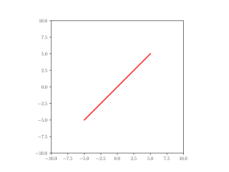
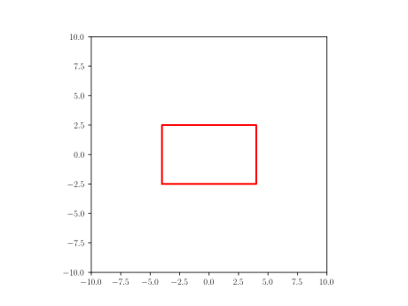
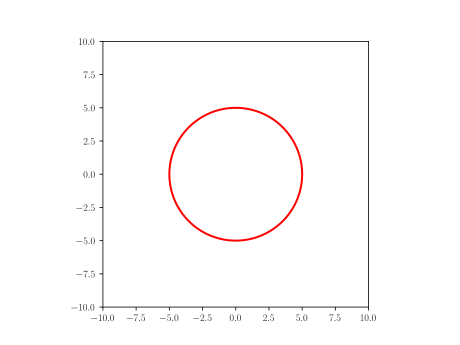
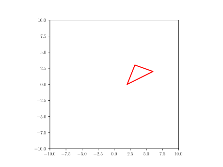
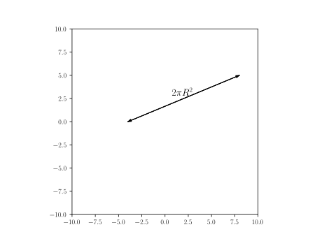
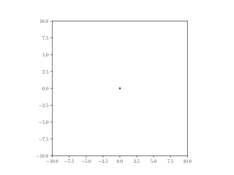

Reference
Line
Yaml
A: point(-5,-5)
B: point(5,5)
line: Line(A,B)
Python
A = point(-5,-5)
B = point(5,5)
line = Line(A,B)

Rectangle
Yaml
L: 8
h: 5
p: point(-(L/2),-(h/2))
rectangle: Rectangle(p,L,h)
Python
L = 8
h = 5
p = point(-(L/2),-(h/2))
rectangle = Rectangle(p,L,h)

Circle
Yaml
circle: Circle(point(0,0),5)
Python
circle = Circle(point(0,0),5)

Triangle
Yaml
L: 3.0
W: 4.0
triangle: Triangle(p1=(W/2,0), p2=(3*W/2,W/2), p3=(4*W/5.,L))
Python
L = 3.0
W = 4.0
triangle = Triangle(p1=(W/2,0), p2=(3*W/2,W/2), p3=(4*W/5.,L))

Distance with text
Yaml
fontsize: 14
t: r'$ 2\pi R^2 $' # sample text
dwt: Distance_wText((-4,0), (8, 5), t, fontsize)
Python
fontsize=14
t = r'$ 2\pi R^2 $' # sample text
dwt = Distance_wText((-4,0), (8, 5), t, fontsize)

Text
Yaml
text: Text(r'$c$', point(0,0))
Python
text = Text(r'$c$', point(0,0))
Cross
Yaml
c: point(0,0)
l: 0.1
line1: Line(c+point(-l,l),c+point(l,-l))
line2: Line(c+point(l,l), c+point(-l,-l))
cross:
formula: "Composition({'line1': line1, 'line2': line2})"
style:
linecolor: black
linewidth: 1
Python
c = point(0,0)
l = 0.1
line1 = Line(c+point(-l,l),c+point(l,-l))
line2 = Line(c+point(l,l), c+point(-l,-l))
cross = Composition({'line1': line1, 'line2': line2})
cross.set_linecolor('black')
cross.set_linewidth(1)

Code initialization
Using the following framework in a jupyter notebook
[1]: %matplotlib widget
[2]: from pysketcher import *
[3]: drawing_tool.set_coordinate_system(xmin=-10, xmax=10,ymin=-10, ymax=10,axis=True)
[4]: drawing_tool.mpl.gcf().canvas
for Yaml, you need the added steps
head = """\
libraries: ["from math import tan, radians, sin, cos","from pysketcher import *"]
"""
myfig={}
sketchParse(head,myfig)
Yaml
myfig={}
sketch="""
# put here the yaml 'object' definition
"""
drawing_tool.erase()
sketchParse(sketch,myfig)
# replace 'object' by the actual one
d = myfig['object'].draw()
drawing_tool.display()
Python
drawing_tool.erase()
# put the code of the object case here
# replace object by the actual name line, rectangle, circle...
object.draw()
drawing_tool.display()